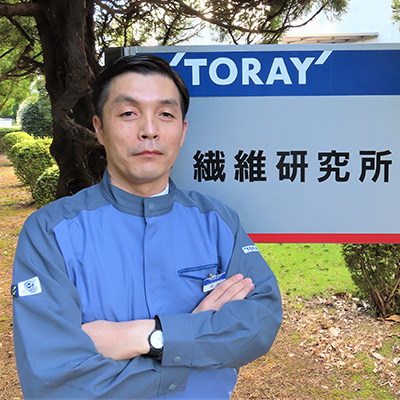

- HOME
- 研究・技術開発
- 未来を拓く研究者・技術者
- 増田 正人
リサーチフェロー増田 正人

- 学位博士（工学）
- 所属繊維研究所
- 専門分野繊維構造設計
研究に対する想い
素材の研究は、自然現象を相手にイメージを現実にする戦略を考え、世の中になかった新しいものを生み出す刺激的な仕事です。歴史のある繊維研究において、見たことのない何かを探求する苦しみはありますが、大小ある様々な発見に心躍らせると共に、我々の衣食住に関わる繊維素材の革新が、人々の生活をより快適で安心なものとし、心豊かな未来社会を実現する一端を担うと信じて、企業理念である「新しい価値の創造を通じて社会に貢献する」をこれからも追い求めていきたいと思います。
主な論文
| 2009年 | 繊維学会誌, Vol.64, No.4 (2009) |
|---|---|
| 2010年 | International Polymer Processing, Hanser, Vol. 25, No. 2 (2010) |
| 2012年 | Polyfile, Vol.49, No.577 (2012) |
| NONWOVENS, Vol23, No1 (2012) | |
| 2014年 | シームシー出版, 高性能繊維の最前線 (2014) |
| 2018年 | 第32回独創性を拓く先端技術大賞受賞論文 (2018) |
| 2020年 | TextilePlus 2020 (2020) |
社外受賞歴
| 2015年 | 第42回繊維学会技術賞 「革新複合紡糸技術 “NANODESIGN （ナノデザイン）”の開発」 |
|---|---|
| 2017年 | 第48回繊研合繊賞グランプリ 「複合繊維の断面形状を高度にコントロールする紡糸技術“ナノデザイン”の開発」 |
| 2018年 | 第32回独創性を拓く先端技術大賞 経済産業大臣賞 「超精密な複合断面の形成が可能な革新複合紡糸技術“NANODESIGN”の研究・開発」 |
| 第49回繊研合繊賞テクニカル部門 「複合紡糸技術“ナノデザイン”を活用した快適ストレッチテキスタイル“プライムフレックス”の開発」 |
|
| 2019年 | 第46回繊維学会技術賞 「艶やかな光沢感とふくらみを併せ持つ ファッション向け新素材“Kinari”の開発」 |
| 第50回繊研合繊賞マテリアル部門 「複合紡糸技術“ナノデザイン”によるシルキー素材“キナリ”の開発」 |
|
| 2020年 | 第51回繊研合繊賞マテリアル部門 「複合紡糸技術“ナノデザイン”使いの和紙の風合いと機能性を持つポリエステル織物“カミフ”の開発」 |
| 第51回繊研合繊賞テクニカル部門 「環境配慮型フッ素フリー高耐久撥水テキスタイルの開発」 |